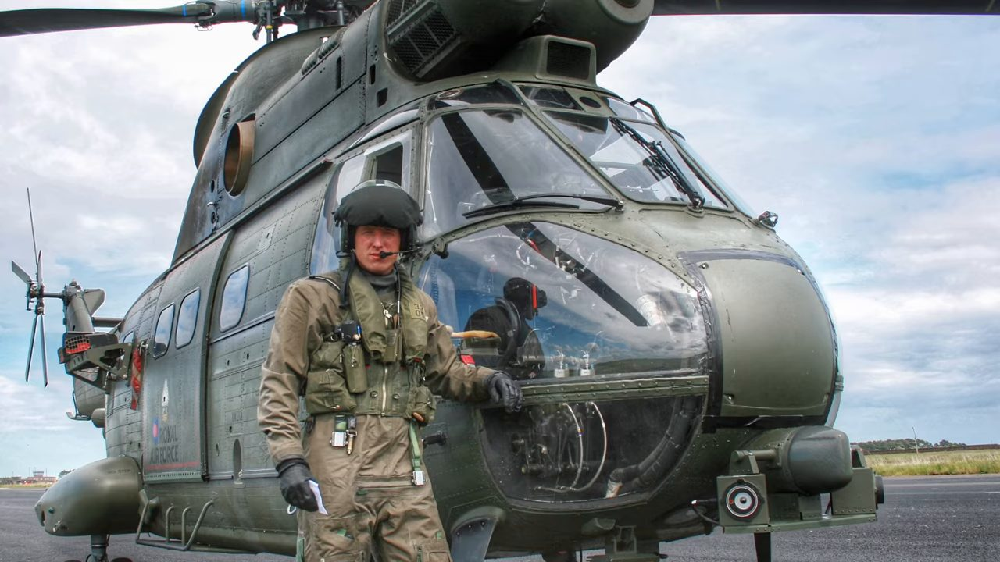

Military / Journalism
The pilot who grew too tall for the cockpit
Mikey Kay on losing his fast-jet dream over an ejection seat, twenty years flying combat helicopters from Bosnia to Iraq, and reporting the news for BBC today.

Mikey Kay grew up two miles from RAF Valley in Wales, an advanced fast-jet training base, and from about four or five years old he woke most mornings to the base's "weather ship" getting airborne at 8am to scout the low-flying routes over the valleys. Top Gun landed when he was fourteen and confirmed what the jet noise had already decided for him. He applied for a Royal Air Force scholarship at fifteen and went solo at seventeen in a Cessna 152 at Liverpool's Speke airport, held short of the runway for the Red Arrows to land, watching all nine aircraft break into the circuit in formation before he flew his own first solo lap.
Grounded by an ejection seat
Kay progressed through the RAF's fast-jet pipeline, from the Firefly to the Tucano to the Hawk, the aircraft that feeds directly into frontline squadrons. But he kept growing, and by the time he'd logged 100 hours on the Hawk he stood 6'6", past what the ejection seat's parameters allowed. The measurement that mattered wasn't height alone but the distance between knee and buttock: in a hangar, ground crew had to winch the seat out of the cockpit with him still strapped into it to confirm his knees were catching on the canopy coaming. His fast-jet career ended in that hangar. He moved to helicopters, first the Gazelle, and found an aptitude for it he hadn't expected.
Twenty years on operations
His first tour was Northern Ireland, flying targeted operations in support of special forces against IRA targets, logging close to a thousand hours in a matter of months, three weeks on and one off, at a rate jet pilots of the same era were getting perhaps ten hours a month. Kay ties that volume directly to Malcolm Gladwell's ten-thousand-hours idea from Outliers, the same principle behind Bill Gates getting early access to a computer at MIT or the Beatles playing marathon club sets in Hamburg before they were famous: there is no simulator or classroom substitute for the specific experience of flying an approach with an engine failure, or flying one while being shot at, and racking up flight hours at that pace is what built his instincts faster than a normal peacetime posting ever could have. At 22, newly winged and based at Aviano in Italy as operations officer for NATO's E-3D Sentry airborne early warning aircraft, he was invited to fly a mission over Bosnia with a US Marine Corps EA-6B Growler squadron hunting surface-to-air radar with HARM anti-radiation missiles. During Arctic warfare training in northern Norway, teaching younger pilots to operate in temperatures down to minus 30, deteriorating weather once forced him to land his helicopter short of fuel in an open field. A passing NATO logistics convoy, Norwegian, happened to be carrying compatible jet fuel and topped him up before his own base's fuel bowser had covered half the distance. In March 2003, he flew into Iraq from Kuwait's Ali Al Salem airbase as part of the push into the Basra area at the start of the war. Later in his career he worked inside the precision-guided munitions process itself, selecting weapon, fuse and platform combinations specifically to hold collateral damage to a minimum, work he describes as a privilege rather than simply a job.
Ultimate Soldier Challenge
Kay's route into broadcasting didn't start at the BBC. Not long after leaving the military, his agent landed him a spot on a History Channel competition series called Ultimate Soldier Challenge, built around teams of former special forces operators. Kay wasn't badged special forces himself, so he brought in a friend instead, John McNish, an ex-Special Forces Support Group operator he'd known for years, then living in Perth. Their team faced off against, among others, US 82nd Airborne Rangers and a professional contractor crew. In the sniper-rifle round, each team had to sprint 200 metres to retrieve a rifle, ammunition and scope from separate staging points before engaging two explosive-rigged targets. Kay, by his own account a surprisingly decent shot for a helicopter pilot, took the shooting role while McNish ran the equipment relay, the two of them working out the exact handoff and breathing sequence needed to shoot steady straight off a sprint.

From the cockpit to the newsroom
Kay now presents The Security Brief on BBC News alongside co-host Christian Fraser, a weekly deep dive into the warfare and security stories behind the headlines, from Russia and Ukraine to Syria, where he has reported from the ground on the conflict's evolution since the Arab Spring. He holds a master's degree in war studies from King's College London and still draws on Clausewitz to explain modern conflict on air. When Iran launched more than 200 ballistic missiles, drones and cruise missiles at Israel, Fraser asked him on air why Netanyahu hadn't responded immediately. Kay's answer walked through Israel's layered Iron Dome defence: Arrow 2 and 3 intercepting long-range threats out past 2,500 kilometres, David's Sling handling the intermediate band, and the Tamir missile catching whatever gets through at close range, a system that buys time precisely so a response doesn't have to be instant. It's the kind of question, he says, where the honest answer is almost always "it's complicated," and where his job is making that complexity legible rather than pretending it isn't there.
His own reporting from Syria has tracked the conflict's evolution since the Arab Spring, through the Free Syrian Army, the rise of Islamic State in Iraq and Syria, Bashar al-Assad's forces, and the web of connections between Iran, Hezbollah and the Houthis in Yemen. None of it, he says, is a story that can be understood overnight; it takes the same accumulation of layered knowledge that took him from operator to analyst in the first place. Getting there took an honest conversation with his agent first, who told him plainly that breaking into news as a middle-aged white man would be difficult given the industry's diversity priorities, something Kay says he understood rather than resented. What he had instead, she argued, was thirty years of counterterrorism and counterinsurgency experience most journalists simply don't carry, paired with an ability to explain genuinely complex, multi-layered warfare, rules of engagement, pattern-of-life analysis, the technology behind a targeting decision, in language a general audience won't switch off from. That combination, not a conventional journalism background, is what got him the slot.
"As a military operator, you are the blunt end of foreign policy."